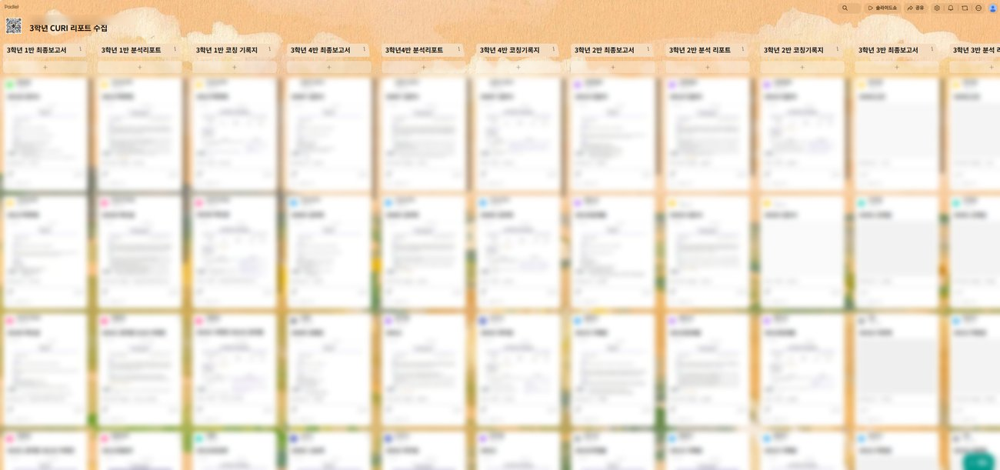
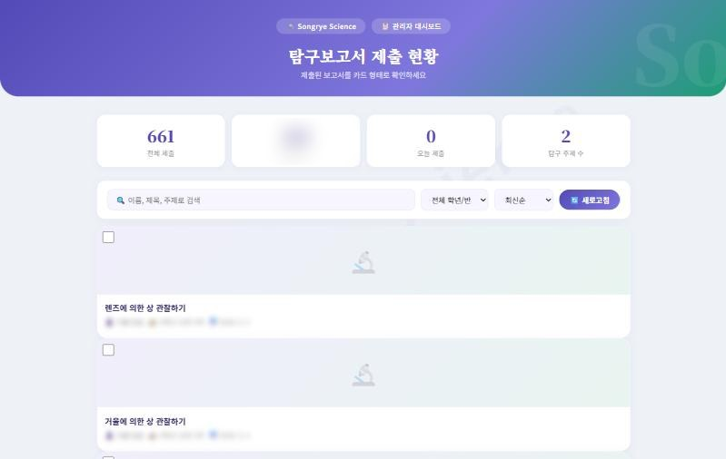
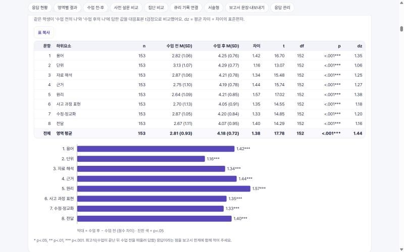
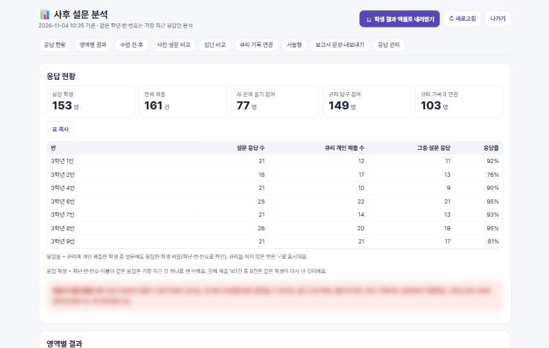
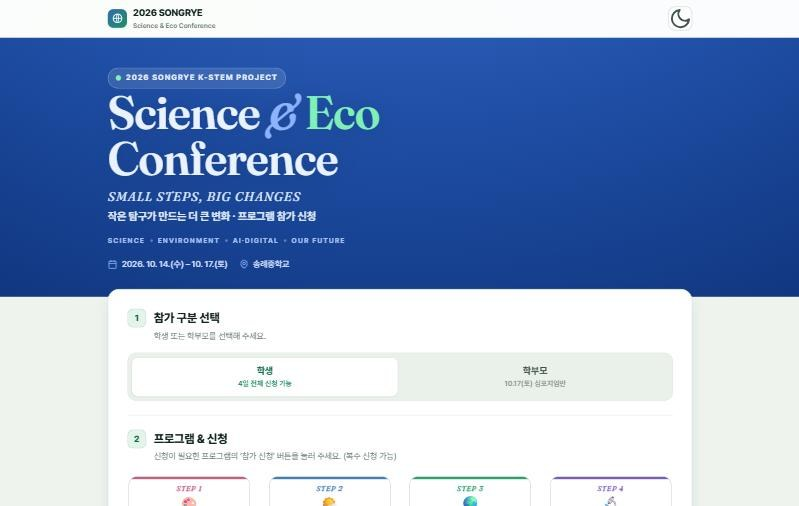
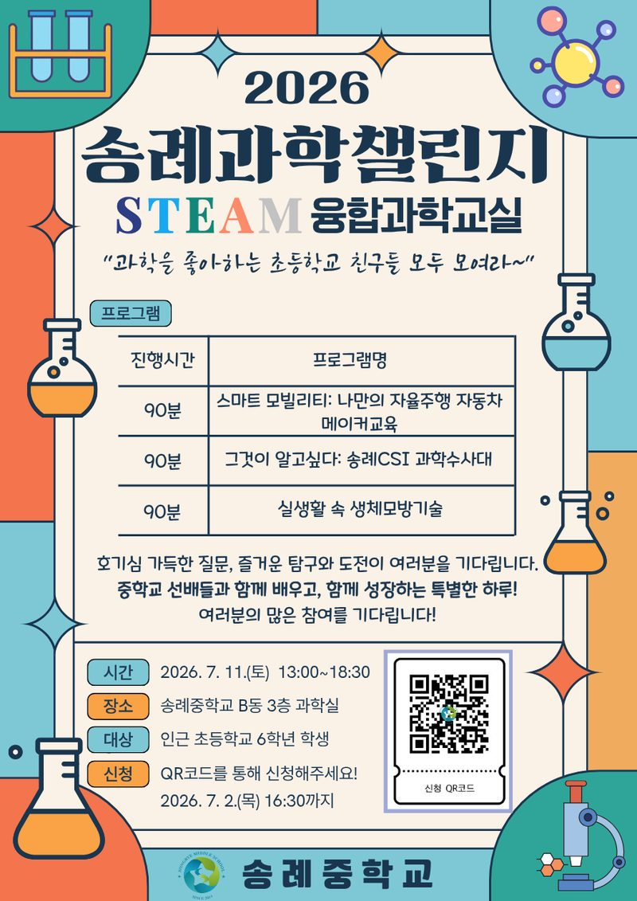
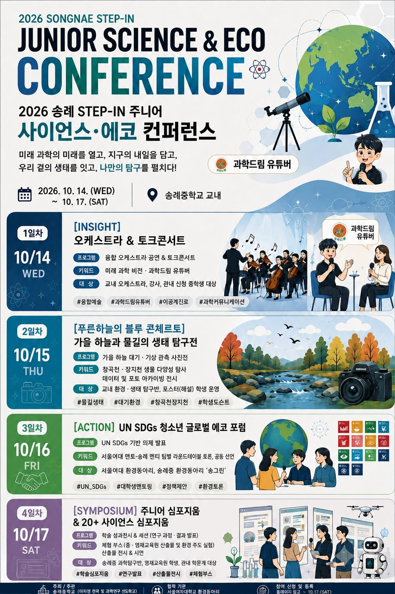
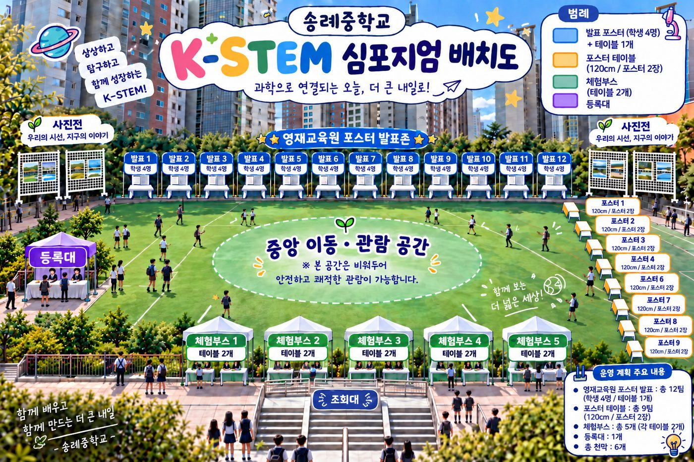
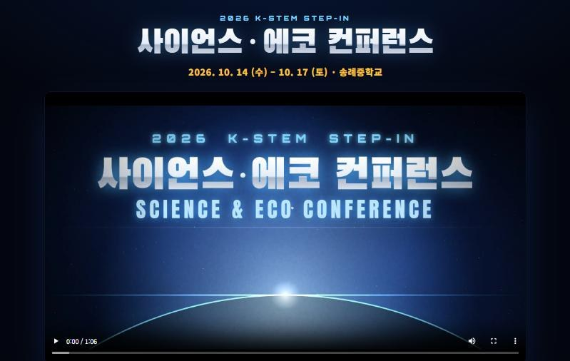
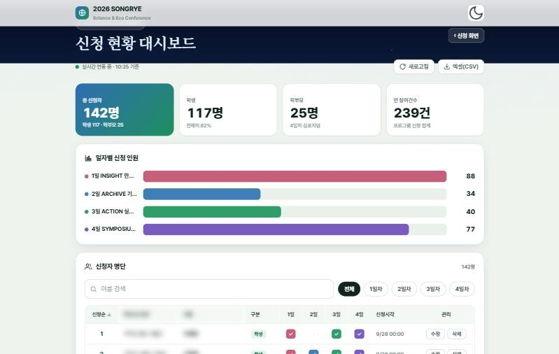

SONGRYE MIDDLE SCHOOL · 2026
2026 서울형 과학탐구 선도학교
송례중학교 성과 공유전
오른쪽 아래 모서리를 누르거나 → 키로 넘겨 보세요
SONGRYE MIDDLE SCHOOL · 2026
2026 서울형 과학탐구 선도학교
송례중학교 성과 공유전
오른쪽 아래 모서리를 누르거나 → 키로 넘겨 보세요
2026 서울형 과학탐구 선도학교 · 송례중학교
담장 없는 탐구
INQUIRY WITHOUT WALLS
송례중학교 과학탐구 선도학교 성과 공유전
송례중은 과학탐구 선도학교 운영 방향을 DREAM 다섯 가지로 세우고, 네 가지 추진 과제로 실천했습니다.
네 가지 추진 과제
교육과정 연계 실험·관찰·자료 분석 및 디지털 탐구환경 활용
개별·공동탐구, 과학탐구동아리 및 심화탐구·체험 활동 확대
이공계 진로 탐색 및 설계 지원, 지역 내 과학탐구 자원 연계
교원 전문성 강화, 우수사례 공유 및 지역 중심 과학탐구 문화 조성
문을 누르면 그 영역의 첫 쪽으로 넘어갑니다. 오른쪽 색인 탭으로도 언제든 이동할 수 있습니다.
DREAM · DIGITAL INQUIRY
지능형 과학실과 디지털 기자재를 활용한 데이터 기반 탐구수업 운영
운영 · 필수 · 디지털 탐구 수업3학년은 '운동과 에너지' 단원에서 AI 탐구 코치 '큐리'와 함께 롤러코스터의 에너지를 탐구했습니다. 큐리는 정답을 주지 않고 "어떤 에너지야?", "단위는?" 하고 되물었습니다.
한 학생의 탐구가 고쳐진 과정
학생 소감을 바탕으로 이름 없이 다시 씀
3학년 탐구는 반별 패들렛에 최종 탐구보고서, 큐리 분석 리포트, 코칭 기록지 세 갈래로 모였습니다. 학생 한 명의 탐구가 쓰고, 분석받고, 다시 고쳐진 흔적이 그대로 남아 있습니다.

디지털 기자재를 갖춘 지능형 과학실을 열고, 월간과학 소식지로 전교에 소개했습니다.
2학년 탐구보고서를 온라인으로 제출하고, 교사는 반별 진행을 한눈에 보며 바로 피드백했습니다.
AI 프롬프트 연구소, 코딩 플레이존, AI 포토 스튜디오 부스에서 학생이 직접 체험을 안내했습니다.
DREAM · RESEARCH LEARNING
탐구 중심 수업 활성화를 통한 학생의 과학적 사고력 및 문제해결 역량 강화
운영 · 필수 · 선택1 · 탐구 수업과 학생 주도 탐구학년마다 탐구의 모양은 달랐지만, 질문을 세우고 끝까지 답한다는 방향은 같았습니다.
성장여권으로 자기 탐구 이력을 쌓기 시작했고, 시드핸즈 프로젝트에서 교내 정원의 자생식물을 관찰했습니다. 가을 컨퍼런스에 가장 많이 신청한 학년도 1학년이었습니다.
'빛과 파동'에서 거울과 렌즈의 상을, '소화'에서 침의 소화 작용을 탐구해 보고서로 완성했습니다.
'운동과 에너지'에서 큐리와 함께 탐구를 설계하고, 보고서·분석 리포트·코칭 기록을 남겼습니다.
입학 첫해부터 행사·대회·수업 보고서를 인증 스티커로 모으며, 자기 탐구의 길을 스스로 기록했습니다.
식물의 구조와 표본을 관찰하고, 학교와 인근의 자생식물 해설을 들으며 씨앗을 거둘 준비를 했습니다.
나흘간의 컨퍼런스에 세 학년 중 가장 많이 신청해, 공연과 사진전, 포럼과 심포지엄을 함께했습니다.
2학년 열네 개 반이 모두 '빛과 파동' 단원에서 거울과 렌즈를 직접 다뤘습니다. 같은 실험 도구 앞에서도 학생들이 붙인 탐구 제목은 저마다 달랐습니다.
가을에는 '소화' 단원에서 「침의 소화 작용」을 탐구했습니다. 두 단원 모두 실험으로 끝내지 않고 가설, 변인, 결과, 결론을 갖춘 탐구보고서로 마무리했습니다.

결과만 적던 학생들이 측정값을 근거로 들고, 과학 원리로 '왜'를 설명하기 시작했습니다. 사후 설문에서 과학적 의사소통 여덟 항목이 모두 뚜렷하게 올랐고, 가장 크게 자란 것은 원리로 이유를 설명하는 힘이었습니다.
같은 학생이 '수업 전의 나'와 '수업 후의 나'를 비교해 답했습니다. 용어, 단위, 자료 해석, 근거, 원리, 설명 순서, 수정, 전달까지 모든 항목이 함께 올랐습니다.


봄, 국립중앙과학관 제55회 사이언스데이. 두 동아리가 자기 연구를 체험 부스로 만들어 시민 앞에 섰습니다.
테라리움으로 도시 모형을 짓고, 녹지 비율과 지표면, 토양 수분을 바꿔 가며 적외선 온도계로 표면 온도를 쟀습니다. 측정 결과로 가장 시원한 도시를 설계해 보이는 열섬 탐구입니다.
DNA의 정보가 RNA를 거쳐 단백질이 되는 과정을 교구로 풀어내고, 코돈표로 '오류 찾기 게임'과 '단백질 만들기 미션'을 설계했습니다. 시약 없이 누구나 참여하는 체험으로 만든 것이 특징입니다.
교과에서 시작한 궁금증이 학생 스스로 설계한 연구가 되었습니다. 가을 심포지엄에서 발표한 학생 연구의 질문들입니다.
플랑크톤을 현미경으로 들여다보고, 어류와 무척추동물을 관찰하고, 밤에는 별을 보고, 경포대 바닷가에서 해양을 탐구했습니다.
행사, 대회, 수업 보고서마다 인증 스티커를 모으고 레벨을 올리며 자기 탐구의 길을 기록합니다.
과학이 수업 시간에만 있는 과목이 아니라, 학교의 일상이 되었습니다.
DREAM · EDUCATOR EXPERTISE
교사연구회, 전문 연수 참여를 통해 탐구 중심 역량을 강화 및 탐구 지도 전문성 제고
운영 · 선택2 · 교원 전문성학생에게 탐구를 가르치기 전에, 선생님들이 먼저 탐구했습니다. 생성형 AI로 웹앱을 만들고, 서울숲에서 생물다양성을 조사하고, 스마트망원경으로 별을 관측하고, MBL로 데이터를 모았습니다.
AI·데이터 연수는 큐리와 디지털 탐구보고서로, 생물다양성 연수는 씨앗 채종과 하천 생태 탐구로, 천체관측 연수는 밤하늘 관측 활동으로 이어졌습니다.
선생님들은 수업과 행사에 필요한 도구를 직접 만들었습니다. 이 도구들은 그대로 다른 학교와 나눌 수 있는 자료가 됩니다.

외부 식물 전문가를 초청해 식물의 구조와 표본을 관찰하고, 학교와 인근 자생식물 해설을 들었습니다. 학생 씨앗 채종 프로젝트의 첫 단계였습니다.
지역 초등학생 초청 융합과학교실의 세 프로그램을 두 명씩 나누어 맡고, 두 반이 교차하도록 함께 설계했습니다.
컨퍼런스 사전 협의회와 평가 협의회로 운영을 함께 준비하고 결과를 나눴습니다.
DREAM · ACTIVE PARTNERSHIP
과학 진로체험 및 지역사회 협력 프로그램 운영을 통한 탐구 기회 확대
운영 · 선택3 · 성과(이공계 진로)어린이집 옆 근린공원. 생태전환 동아리 '송그린' 중학생들이 여섯, 일곱 살 아이들의 선생님이 되었습니다. 세 모둠이 각자 수업을 짜서 직접 진행했습니다.
환경을 배우던 학생들이, 어린이의 눈높이로 다시 설명하며 자기 지식을 한 번 더 다졌습니다.
이웃 송례초와 위례별초 6학년을 학교로 초대해 중학생과 한 모둠으로 STEAM 융합과학교실을 열었습니다.

학교에서 나눈 씨앗이 마을의 아이들에게 건너가고, 마지막에는 나라의 씨앗 금고에 닿았습니다.
송례 씨앗은행허브 모종을 빌려 키우고, 거둔 씨앗을 다시 반납하는 순환
어린이집의 작은 손중학생이 아이들에게 건넨 씨앗과 약속
대모산 자생식물 채종시드핸즈 프로젝트, 씨앗을 직접 거두고 일지를 쓰다
백두대간 글로벌 시드볼트정선·건조·포장을 거쳐 송례의 씨앗을 기탁
위례의 하천과 습지에서 시작한 질문을 들고, 서울여대 기후·환경동아리 대학생들과 국제 환경 의제를 토론했습니다.
송례중을 졸업하고 과학고를 거쳐 KAIST에 진학한 선배가 후배들 앞에 섰습니다. 선배는 이 학교에서 했던 실험과 동아리 경험이 어떻게 진학의 바탕이 되었는지, 지금의 선도학교 프로그램을 어떻게 쓰면 좋은지 들려주었습니다. 이 자리에는 강동송파영재교육원 학생들도 함께했습니다.
조별로 캠퍼스를 돌아보고 이공계 대학생 멘토에게 공부와 진로를 직접 물었습니다.
과학 크리에이터에게 과학을 즐기고 알리는 진로를 들었습니다.
자원순환교육과 함께 Green Job의 세계를 탐색했습니다.
영재교육원 학생들과 같은 무대에서 자기 연구를 포스터로 발표했습니다.
DREAM · MULTIPLYING IMPACT
탐구수업 우수사례 공유를 통한 과학교육 내실화 및 과학탐구 문화 조성
운영 · 선택3 · 우수사례 공유·확산
오케스트라 공연과 과학드림의 진로 토크콘서트
가을 하늘·구름 사진전, 자원순환과 녹색일자리
위례 습지 생물다양성 사진전, UN SDGs 포럼
학생·영재교육원 연구 발표와 체험랩, 학부모와 이웃 초등학생에게 공개
학생과 영재교육원의 연구 포스터가 운동장을 둘러싸고, 가운데는 학부모와 이웃 초등학생이 오가는 관람 길로 비워 두었습니다. 체험부스에서는 중학생이 직접 실험을 안내했습니다.

심포지엄 배치도 · 영재교육원 포스터 발표존, 학생 포스터 테이블, 체험부스, 사진전


「송례 과학 디스커버리」는 학교의 탐구 성과를 전교생과 교직원에게 매달 알리는 소식지입니다. 매월 같은 코너 틀로 꾸준히 발행했습니다.
지능형 과학실 오픈, 학년별 탐구 성공 사례
캠프 성과와 다음 행사 안내, 켈빈 경과 절대온도 이야기
여름철 대삼각형 관측 시기, 호기심을 여는 한마디
학교의 탐구가 마을의 과학이 되었습니다. 여섯 살 아이부터 학부모와 대학생까지, 송례의 탐구에 함께한 사람의 나이에는 담장이 없었습니다.
한 해 동안 실제로 쓴 계획서를, 다른 학교가 그대로 가져다 쓸 수 있도록 학교명·교사명·주소·연락처를 지우고 다시 정리했습니다. 목적, 운영 방침, 일정, 예산 예시와 함께 운영하며 얻은 TIP을 프로그램마다 붙였습니다.
위의 목차나 다음 쪽의 프로그램 카드를 누르면 계획서 전체가 크게 열립니다. 열린 화면의 글 복사를 누르면 계획서 내용을 그대로 복사해 한글·Word 문서에 붙여 쓸 수 있습니다.
카드를 누르면 계획서가 크게 열립니다
운영 방법, 계획서, 프로그램에 대해 물어보시면 송례중 과학과 선생님들이 직접 답변을 달아 드립니다.
게시판에는 소속과 이름 일부(예: 홍*동)만 보입니다.
불러오는 중…